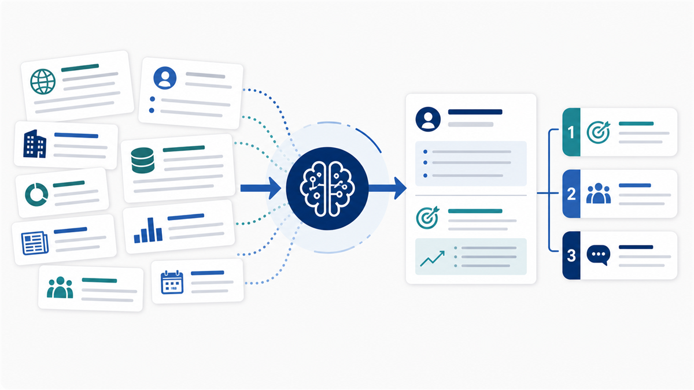
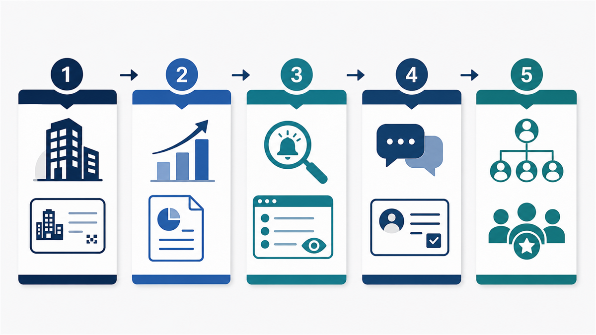
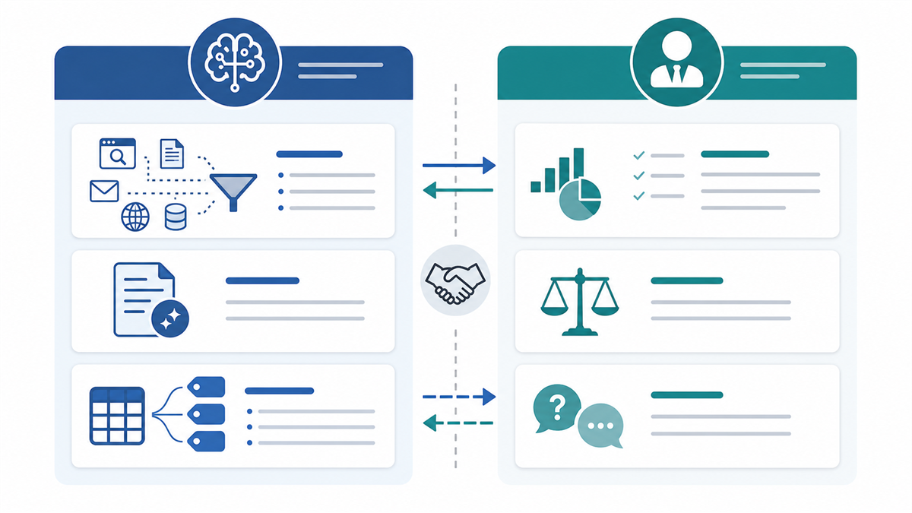
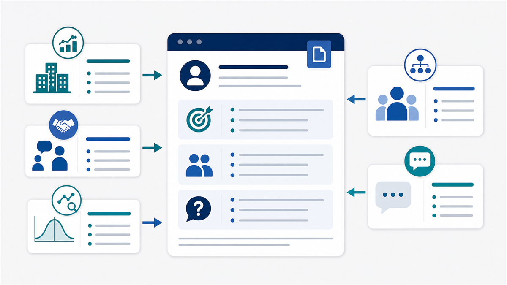
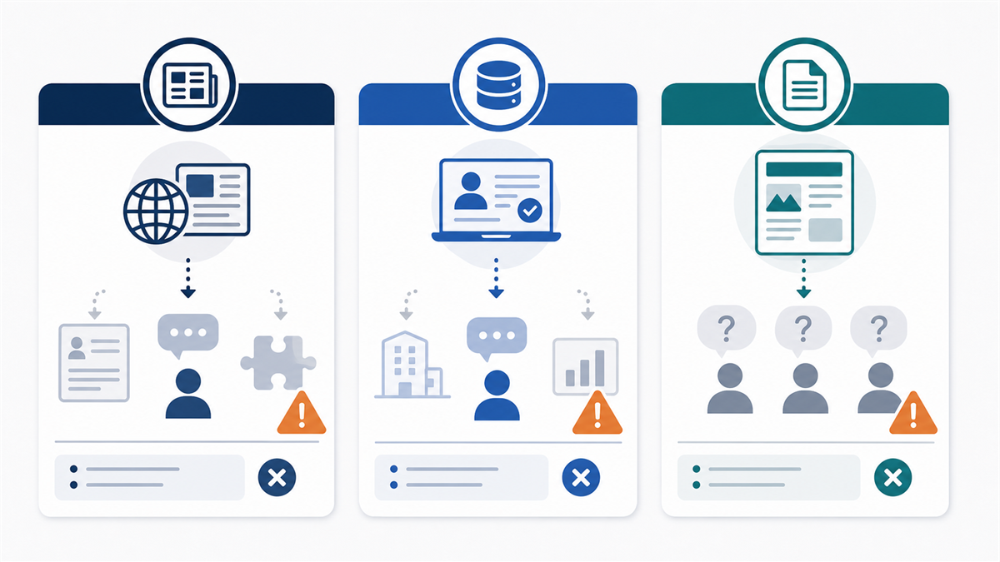
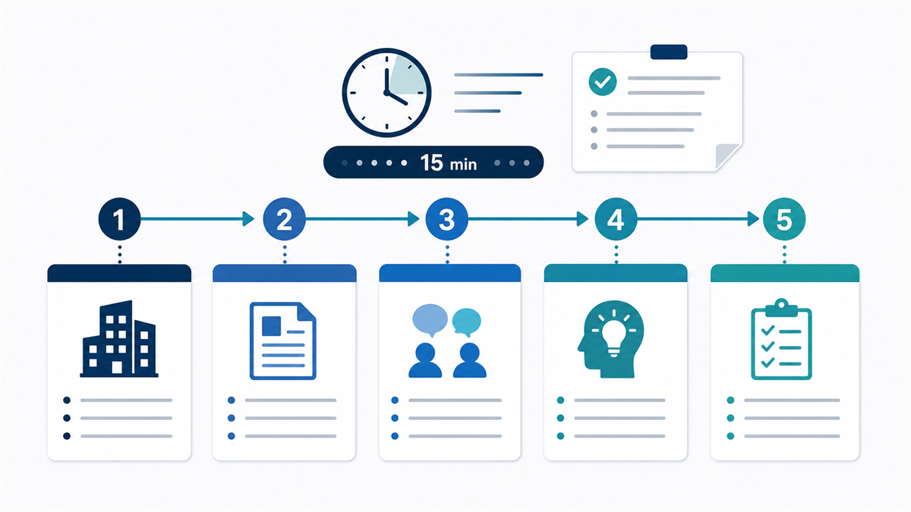
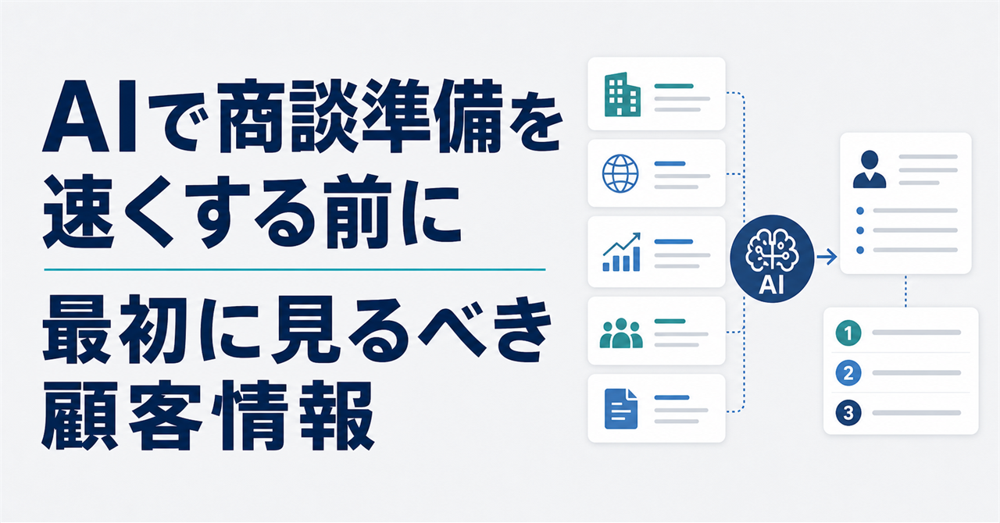

商談準備にAIを使うと、企業概要の要約、ニュースの抽出、質問案の作成はかなり速くなります。営業担当者が毎回ブラウザを開き、会社サイト、ニュース、IR、SFA、過去商談メモを行き来していた時間は、確かに短くできます。
ただし、準備時間が短くなったあとに商談の質が上がるかは別問題です。AIが作った会社概要を読んでも、初回の質問が「現在の課題を教えてください」から変わらないのであれば、営業準備は速くなっただけで深くなっていません。
商談準備の本質は、情報を集めることではありません。顧客がいま置かれている状況を読み、こちらが確認すべき問いに変えることです。AIを入れるなら、最初に設計すべきなのは、どのツールを使うかではなく、AIにどの顧客情報を、どの順番で読ませるかです。

この記事では、営業AIで商談準備を速くしたい企業が、最初に見るべき顧客情報を整理します。結論から言えば、最初に見るべきなのは担当者の肩書でも会社概要でもありません。顧客企業がいま、なぜ変わらざるを得ないのかを示す情報です。
商談準備が浅くなる理由は、情報不足ではなく順番の不在にある
多くの営業組織では、商談前に見る情報がすでに増えすぎています。企業サイト、導入事例、ニュース、IR、求人、展示会参加履歴、資料ダウンロード、MAの行動ログ、SFAの商談履歴、名刺情報、過去の失注理由。見るべきものを挙げれば、いくらでも出てきます。
この状態でAIを入れると、表面的には便利になります。URLを渡せば要約してくれますし、過去メモを貼れば論点らしきものを並べてくれます。ところが、入力する情報の順番が決まっていなければ、AIは重要度の判断までは担えません。結果として、要約は整っているのに、商談では使いにくい準備メモが増えていきます。
商談準備には、少なくとも三つの段階があります。第一に情報を集めること。第二に顧客の文脈を読むこと。第三に提案仮説と確認質問へ変えることです。AIは第一段階を高速化できますが、第二段階と第三段階の設計が弱いと、浅い要約が速く出るだけになります。
BtoBの購買側も、営業担当者に会う前から情報収集を進めています。ワンマーケティングの「顧客企業の購買プロセス白書2025」では、営業面談前に仕入先候補を絞り込む購買側の動きや、高額商談ほど関与者が増える構造が示されています。営業が初回面談でゼロから顧客課題を聞く前提は、かなり弱くなっています。
出典: https://box.onemarketing.jp/p/onemarketing/xQxRoM/pdf
また、トライベック・ブランド戦略研究所の「BtoBサイト調査2025」では、仕事上の製品・サービス情報源として企業Webサイトが高い比率で利用されていることが示されています。営業準備で見るべきなのは、顧客の会社情報だけでなく、相手がすでにどの情報に接している可能性があるかです。
出典: https://brand.tribeck.jp/research_service/websitevalue/bb/bb2025/
最初に見るべきなのは、顧客企業の「変化」です
商談準備で最初に見るべき情報は、会社概要ではありません。会社概要は必要ですが、最初に読む情報としては弱い。設立年、従業員数、事業内容、拠点、売上規模を把握しても、それだけでは「なぜ今、この会社と話す必要があるのか」までは見えてきません。
最初に見るべきなのは、顧客企業に起きている変化です。たとえば、事業方針の変更、新規事業、撤退、統合、拠点拡大、組織変更、役員交代、採用強化、価格改定、法規制対応、競合環境の変化、DX方針の更新などです。
変化を見る理由は単純です。変化は、顧客の中に新しい負荷が生まれている可能性を示すからです。新しい部門ができれば、業務プロセスやシステム連携が変わります。エンタープライズ向けの販売を強化していれば、営業準備、稟議資料、アカウントプラン、意思決定者の把握に負荷がかかります。
AIに会社概要から読ませると、AIはきれいな企業紹介を作ります。AIに変化情報から読ませると、AIは「なぜ今この会社が動く必要があるのか」を整理しやすくなります。商談で使える仮説は、静的なプロフィールからではなく、変化と負荷の関係から生まれることが多いからです。
上場企業や開示企業であれば、有価証券報告書や開示資料も有効です。EDINETでは提出書類のAPI取得ができるため、企業が公式に語っている事業リスク、投資方針、経営課題を確認できます。大企業向けの商談では、担当者のプロフィールよりも先に、会社が公式にどの課題を語っているかを見る方が、提案仮説に近づきます。
出典: https://disclosure2dl.edinet-fsa.go.jp/guide/static/disclosure/download/ESE140206.pdf

顧客情報は、企業識別、変化、接点、意思決定の順で見る
具体的には、商談準備AIに読ませる情報を次の順番で整理すると扱いやすくなります。
まず、企業識別情報です。会社名、法人番号、所在地、グループ会社、社名変更、統合、移転などを確認します。これは地味ですが、AI活用の前提として重要です。同名企業、関連会社、旧社名、事業所単位の情報が混ざると、AIの要約以前に入力がずれます。
国税庁の法人番号公表サイトでは、法人番号、商号または名称、所在地の基本3情報が公開され、Web-APIも提供されています。営業AIに高度な分析をさせる前に、どの法人について話しているのかを揃えることは、名寄せと情報統合の土台になります。
出典: https://www.houjin-bangou.nta.go.jp/website/index.html
出典: https://www.houjin-bangou.nta.go.jp/webapi/index.html
次に、直近の変化情報です。企業サイト、ニュース、IR、採用情報、導入事例、組織変更、事業方針から、相手に起きている変化を読みます。この段階では、まだ提案を決めません。変化によって新しく発生しそうな業務負荷を洗い出します。
その次に、購買・検討の兆候を見ます。資料ダウンロード、セミナー参加、問い合わせ、価格ページ閲覧、比較記事閲覧、過去の相談履歴などです。ただし、ここで「興味あり」と短絡してはいけません。行動データは、相手が何に不安を持ち、どの比較軸を見ているかを読む材料です。
最後に、既存接点と意思決定構造を重ねます。過去商談、失注理由、問い合わせ、CS対応、契約履歴、既存取引を見たうえで、誰が利用部門で、誰が予算を持ち、誰がセキュリティや法務を見て、誰が最終的に承認するのかを考えます。BtoB商談では、担当者の関心と決裁論点がずれることがあります。
AIに任せる範囲と、人間が引き受ける範囲を分ける
AIに商談準備を任せるとき、すべてをAIに判断させようとすると失敗します。AIに向いているのは、情報の収集、長文資料の要約、過去接点の整理、類似顧客との比較観点の抽出、質問案の初期生成です。これらは、情報量が多く、短時間で整理する価値が高い領域です。
一方で、人間が引き受けるべき領域があります。顧客の優先順位の解釈、提案してよいタイミングの判断、相手の社内事情や予算感の読み、あえて聞かない方がよい質問の判断、自社都合の仮説になっていないかの確認です。
IPAはAIの利活用例として、文書要約、タグ付け、データ解析、予測、マッチングなどを挙げています。商談準備で重要なのは、AIを文章作成ツールとしてだけ見るのではなく、散らばった顧客情報を読み、分類し、仮説候補を出す道具として位置づけることです。
出典: https://www.ipa.go.jp/digital/ai/transformation.html

さらに、AIに入れる情報の範囲も決める必要があります。顧客名簿、担当者メモ、商談録画、メール履歴、社内メモを外部の生成AIへそのまま入力する運用は危険です。便利だから入れる、という判断ではなく、利用目的、契約、社内規程、個人情報、機密情報の扱いに照らして分類すべきです。
顧客情報を提案仮説に変えるには、変化から質問へ落とす
顧客情報を見ても、提案仮説に変わらない組織があります。理由は、情報をそのまま「知識」として保存してしまうからです。商談準備では、情報を質問に変換しなければなりません。
変換の流れは、次のように考えると扱いやすくなります。まず、顧客に起きている変化を確認します。次に、その変化で負荷が増える業務を考えます。続いて、影響を受ける部門や役職を整理します。そのうえで、現在の代替手段、放置した場合のリスク、商談で確認すべき質問、提案の入口へ落とします。
たとえば、あるSaaS企業がエンタープライズ開拓を強化しているとします。この情報だけでは、まだ提案にはなりません。エンタープライズ商談では、関与者が増え、稟議資料が必要になり、初回商談前の情報整理が重くなり、アカウントプランの粒度が問われます。
そこから、「大手企業向け商談では、初回前にどの情報を必ず確認していますか」「関与者が増えた商談で、提案前に不足しやすい情報は何ですか」「過去商談や既存接点は、担当者以外でも読める状態になっていますか」といった確認質問が生まれます。このような質問は、会社概要の要約からは出てきません。
重要なのは、仮説を断定しないことです。「御社は困っているはずです」と言い切る必要はありません。むしろ、変化から考えられる論点を置き、相手の実態を確認する方が自然です。AIは、この変換の下書きを作るのに向いています。

失敗パターンは、情報の見方が決まっていない時に起きる
AIを使った商談準備には、典型的な失敗があります。第一に、企業概要の要約で満足することです。企業概要は必要ですが、それだけでは商談理由になりません。相手にとっては、公式サイトに書いてある情報を読み上げられているだけです。
第二に、ニュースを提案理由に直結させることです。新規事業、資金調達、拠点拡大、役員交代といったニュースは重要ですが、それだけでは提案の根拠になりません。その変化がどの部門に負荷をかけ、どの業務を変え、どの意思決定を迫るのかまで読まなければ、商談では使えません。
第三に、CRMの過去メモをそのまま信用することです。過去商談は重要ですが、情報が古いこともあります。担当者が変わっている場合もあります。過去の失注理由が現在も同じとは限りません。AIにCRMを読ませる場合でも、更新日、情報源、当時の前提を確認する必要があります。

これらの失敗は、AIの性能が低いから起きるわけではありません。顧客情報の読み方が決まっていないから起きます。AIは、与えられた情報と指示の範囲で、もっともらしい出力を返します。その出力を商談で使えるものにするには、人間側が「何を確認するための準備なのか」を先に決めておく必要があります。
実装するなら、商談後に戻るワークフローまで設計する
AI商談準備を実装するなら、商談前だけで終わらせない方がよいです。商談前にAIで準備し、商談後に結果を戻し、次の準備が少し賢くなる。ここまで設計して初めて、組織として学習できます。
最小構成は、次の流れです。まず、顧客の企業識別情報を確認します。次に、直近の変化情報を集めます。続いて、MA、SFA、CRM、商談メモから既存接点を集めます。そのうえで、AIに変化と接点の接続を整理させます。出てきた仮説を三つ程度に絞り、それぞれを確認質問へ変えます。商談後には、当たった仮説、外れた仮説、新しくわかった事実をCRMへ戻します。

この流れで重要なのは、最後の「戻す」です。AI商談準備を、商談前の時短だけで考えると、毎回その場限りの準備で終わります。しかし、商談後に仮説の当たり外れを戻せば、次回のAI入力が良くなります。営業組織としての顧客理解も蓄積されます。
総務省と経済産業省が公表したAI事業者ガイドラインでも、AIの開発、提供、利用を含む事業者向けの考え方が整理されています。営業部門のAI利用も、個人の工夫で終わらせず、入力データ、出力確認、責任分界、運用ルールを決める対象として扱うべきです。
出典: https://www.meti.go.jp/press/2024/04/20240419004/20240419004.html
最初に見るべきなのは、顧客が変わらざるを得ない理由です
AIで商談準備を速くすること自体は、難しくありません。情報を要約し、質問案を出し、メモを整えるだけなら、すぐに始められます。しかし、それだけでは商談の質は大きく変わりません。速くなった準備が、浅い準備のまま残ることもあります。
最初に見るべき顧客情報は、会社概要ではなく、顧客が変わらざるを得ない理由を示す情報です。企業に起きている変化、購買や検討の兆候、過去接点、意思決定構造、現場課題の断片。それらを順序立てて読み、提案仮説と確認質問へ変えることで、AIは単なる要約ツールではなくなります。
営業AIの価値は、人間の判断を消すことではありません。人間が見るべき論点を、短時間で見える場所に並べることです。商談準備をAIで速くしたいなら、最初に決めるべきなのは、AIに何を作らせるかではなく、AIにどの顧客情報を、どの順番で読ませるかです。
noteサムネイル
